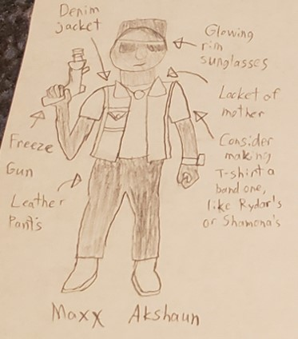
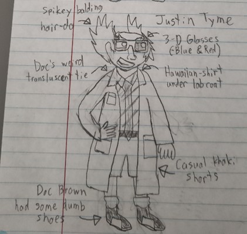
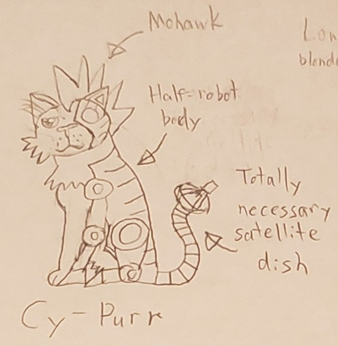
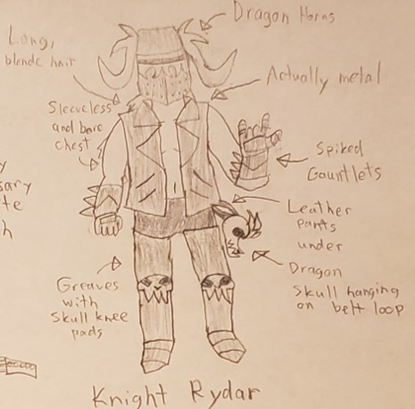
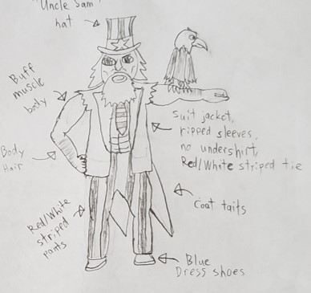
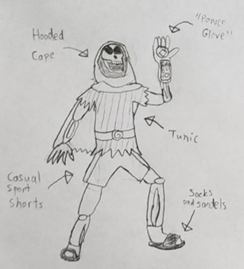
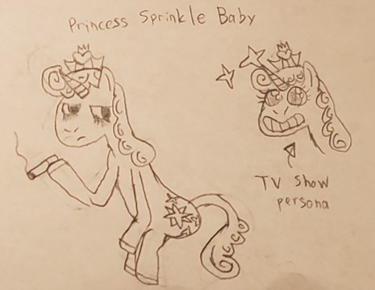

Hopefully in the final project a player can select one of up to 16-19 drivers. Each driver brings with them their own vehicle with their own stats and different personality. Each vehicle's stats are comprised of Top Speed, Acceleration (how quickly a vehicle can go from zero to sixty and beyond), Handling (it's ability to make sharp turns), Armor (how much damage it can take before being destroyed), and Boost (how efficiently it uses it's boost meter).
Maxx Akshaun
Maxx led a rough life, everything changed when the villain, Justin Tyme, used his time travel technology to assassinate Maxx's mother and run over his cat a year before Maxx was even born. Maxx now takes it upon himself to search for truth and justice on the streets of Miami as part of it's police force. His search for the villainous Tyme has led him to the Neon Circuit racing federation. He now joins in the events to infiltrate them and look for more clues to find his nemesis, and bring him to justice.
Justin Tyme
Justin was a scientist working for the highly accredited Pluto/Uranus University Program (PUUP for short) until he was kicked out for his wiring of funds from the University for personal projects. He now continues his work on the now illegal concept of Time Travel (which was made illegal through the Anti-Robot and Machine Potentially Interfering with Time Solution, or ARMPITS for short), alone and underground. His overall goal: to woo the mysterious Mona Lisa and make her his bride. During his experiments, he was able to get a glimpse into the future and saw that Officer Maxx Akshaun would inevitably end his campaign towards complete mastery over time. In one of his short lived test sessions he was able to successfully eliminate his foe's mother before she was able to birth him, but unfortunately for Justin, all this accomplished was to make Maxx angry. On the cusp of his breakthrough, Justin is short of funds to get enough neontanium to construct the final piece necessary for consistent and accurate time travel, so he joins the Neon Circuit to acquire the last of the funds necessary.
Cy-Purr
Cy-Purr is Maxx Akshaun's best friend, partner in justice, technological support, and pet cat. He's also a cocky, world renowned hacker and genius technology expert. He's been with Maxx ever since "The Incident" when Justin Tyme killed Akshaun's mother and ran over the now dubbed "Cy-Purr". Cy-Purr prefers to help Maxx from behind a computer screen breaking into computer systems and disabling electronics for him, but with his infiltration of the Neon Circuit racing federation Cy-Purr couldn't help but join in on the events to showcase his driving skills and to show off his ability to engineer a vehicle he hacked to go faster.
Knight Rydar
Lead guitarist of the metal band: "Murder Death Kill" his brutal image made him adore the speed and destruction of the Neon Circuit. He's taken a break from song writing and touring to fulfill a dream to join in on the event. So much so, he commissioned a mechanic to convert the skull of his favorite pet dragon into his racing vehicle. His fans couldn't be more excited and his bandmates couldn't be more concerned.
President Kickass
You know him! You love him! America elected for four straight terms of office! It's President Kickass! He's back on the campaign trail after his 4 year hiatus pursuing a wrestling career, and instead of touring America giving speeches and debating would-be opposition he'll show off how lovable he is by tapping into America's and the world's most beloved sport, the Neon Circuit. Watch as he leaves his competition in the dust for truth, justice, and freedom.
Lord Bonedominous
Tremble in fear, mortals, for it is the Lord of darkness and evil-doing, Lord Bonedominous...or at least that's what he says about himself. In reality, he may just be a weird skeleton guy who lives in a tiny apartment on the edge of town who blows his limited funds on bad pizza and overpriced machinery to fuel plots to get on the nerves of his self-appointed nemesis, Barbarian Dude, and may just need some cash from racing for his latest scheme...or at least that's what he says he totally isn't.
Princess Sprinkle Baby
When most people think of Princess Sprinkle Baby, they think of the beautiful leader of Ponytopia who attends fancy tea parties, loves her subjects, and goes on adventures to defend it from nasty evildoers on the hit children's show "Hello Little Horsies" when in reality he is a middle-aged stallion who would rather talk to his friends at the bottom of a glass than to talk to the legions of little girls that love to brush the mane of toys based on him. As of recent, the toy company behind "Hello Little Horsies" has a deal to make toy cars based on Neon Circuit, so to help promote it, Sprinkle Baby's contract is making him run a season in the Neon Circuit. Can he keep up the facade of the character in the white knuckle thrills of Neon Circuit? I don't know, I'm just writing his bio...
Shamona

Beloved pop starlet and the singer for such amazing hits such as: "You're Less Than Dirt to Me Now, Boy" and "Love Love Love Love Love" Shamona, after a successful world tour was not satisfied with how outreaching her music is and has announced a run in the Neon Circuit to try to get her message and her music to reach the galactic scale. "Hopefully the masses of the universe feel my messages of love and peace I'll be blasting at them on the track, leaving them a smoking husk of admiration for their fellow man and woman." the famous starlet said in a recent interview. She's also expected to make an announcement about her animal preservation charity and the outbreak of the local overpopulated ninjas near the Neo Newest York area, later this year.